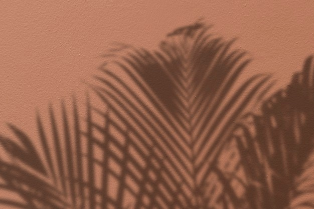
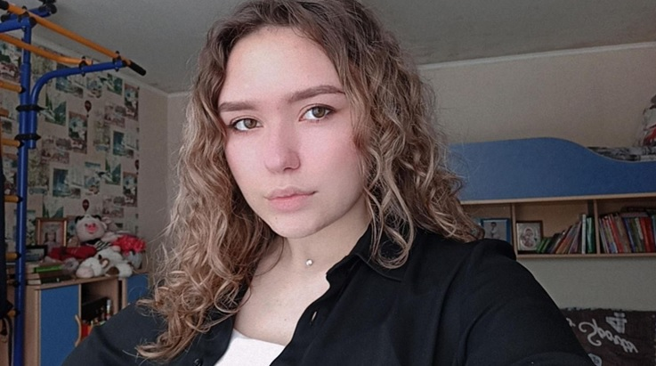
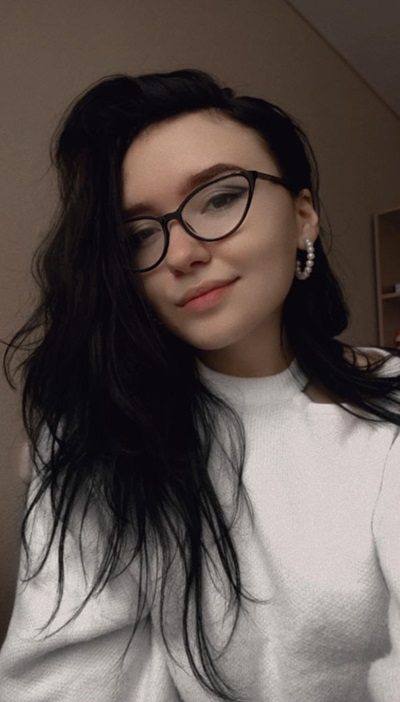

Родилась 18 апреля 2003 года в Ошмянах, жила в Кольчунах, а сейчас учится и проживает в Минске. До 6 класса училась в школе №1, затем перевелась и закончила Гимназию Ошмянского района. Осилила только 2 года из 4 в музыкальной школе, обучаясь игре на домбре.
Анастасия Филон


Ошмяны маленький город, но, если и появлялось что-то творческое, Настя всегда пробовала: танцы, рисование, плетение бисером, вышивание и другие различные занятия в кружке «Умелые ручки». До сих пор старается поддерживать свою творческую часть: вяжет, плетёт фенечки, рисует, выкладывает картины алмазами.

Так же немного увлекается готовкой. Это, скорее, следствие из того, что она очень любит покушать. В дополнение к этому она обожает кулинарное шоу «Мастер шеф». Там такие вкусные блюда готовят, что невозможно не захотеть попробовать их.
Ещё в детстве хотела покрасить волосы в красный или рыжий. Выросла и смогла. Только сначала блонд, потом синий, потом розовый, опять блонд, затем лавандовый, жёлтый, зелёный, снова блонд, неожиданно в сплит, а теперь в чёрный. Вот так вот. Волосы кучерявые от природы, у Насти все в семье кучерявые: папа, мама, Настя и младший брат.
Факты об Анастейши
ФИО: Филон Анастасия Алексеевна
Возраст: 18
Знак зодиака: Овен
Любимый цвет: Голубой, Фиолетовый
Любимый цветок: Лилии, Пионы
Любимая музыка: Рок, Рэп, Альтернатива
Любимый исполнитель: ЛСП, Ким Тэхён (нет ну вы его видели)
Любимый мультик: Чародейки (лучше Винкс), Камуфляж и шпионаж
Любимое время года: Весна
Вредные привычки: Неумение говорить «нет»
Любимый фрукт: Ананас, Авокадо, Кокос
Любимая ягода: Черешня, Голубика
Любимый напиток: Мохито, Пина колада (всё безалкогольное!!!)